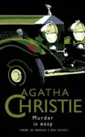
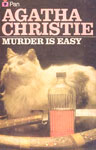
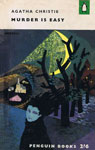
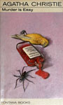
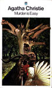
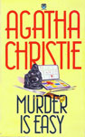
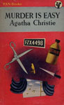

Murder Is Easy was first published in the UK by the Collins Crime Club on 5 June 1939 and in the US by Dodd, Mead and Company in September of the same year under the title of Easy to Kill.
Christie's recurring character, Superintendent Battle, has a cameo appearance at the end, but plays no part in either the solution of the mystery or the apprehension of the criminal. The book did not contain the character of Miss Marple: she was introduced in the screen versions.







Screen Versions
It was adapted into a television film in the United States in 1982 with Bill Bixby (Luke), Lesley-Anne Down (Bridget), Olivia de Havilland (Honoria) and Helen Hayes (Lavinia) who, nearing the end of her decades long acting career, played in two further adaptations of Agatha Christie's works: A Caribbean Mystery and Murder With Mirrors.
A 2008 adaptation, with the inclusion of Miss Marple (played by Julia McKenzie), was included in the fourth series of Agatha Christie's Marple for ITV. It deviated significantly from the novel by removing some of the characters, while adding new ones and changing those left in. New subplots were added, and the murderer's motive was changed.